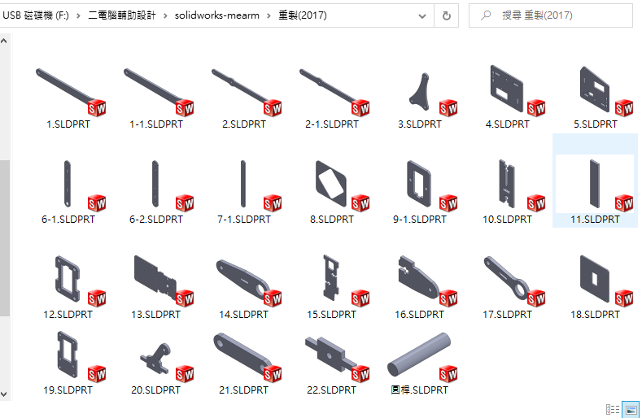

第一階段:mearm 零件檔 組合檔

第二階段:mearm 組合
第三階段:mearm 模擬
對不起，我真的做不出動態模擬
心得:電腦輔助、程式設計是我的弱項，我很清楚自己能會、能理解的東西不多，but doing something is better than doing nothing。與其什麼都不做擺爛，還不如做點自己會的東西
Copyright © All rights reserved | This template is made with by Colorlib